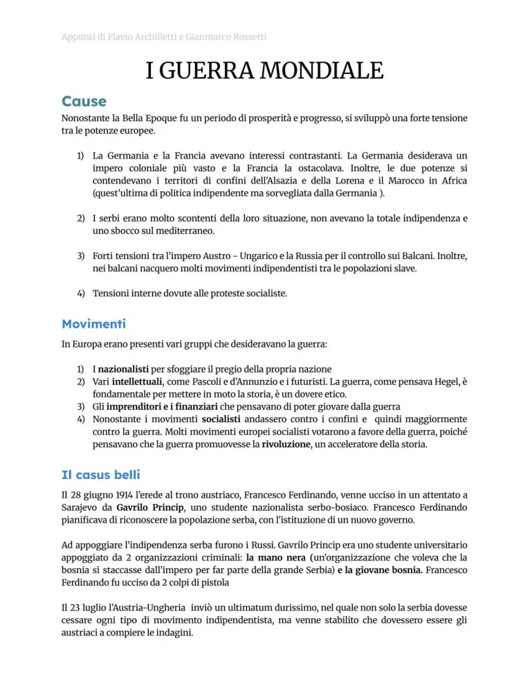
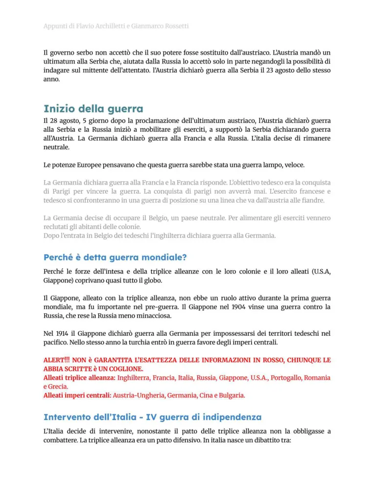
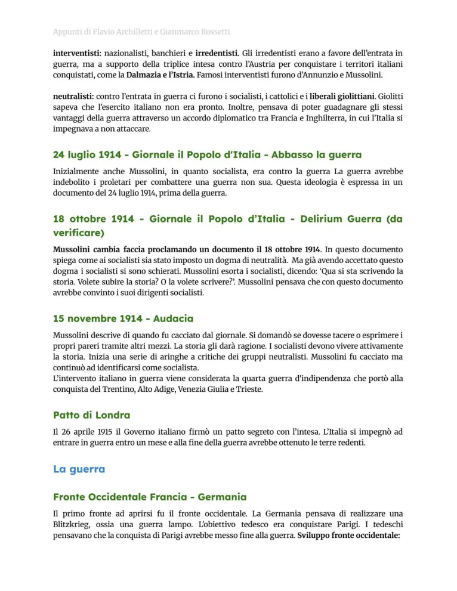
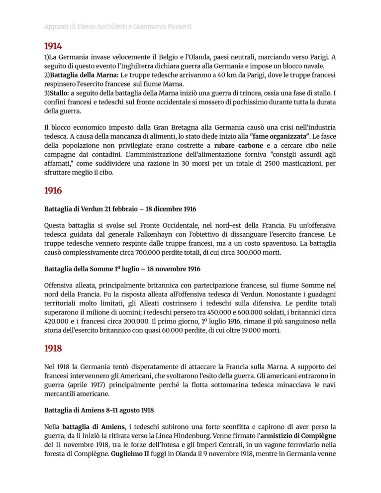
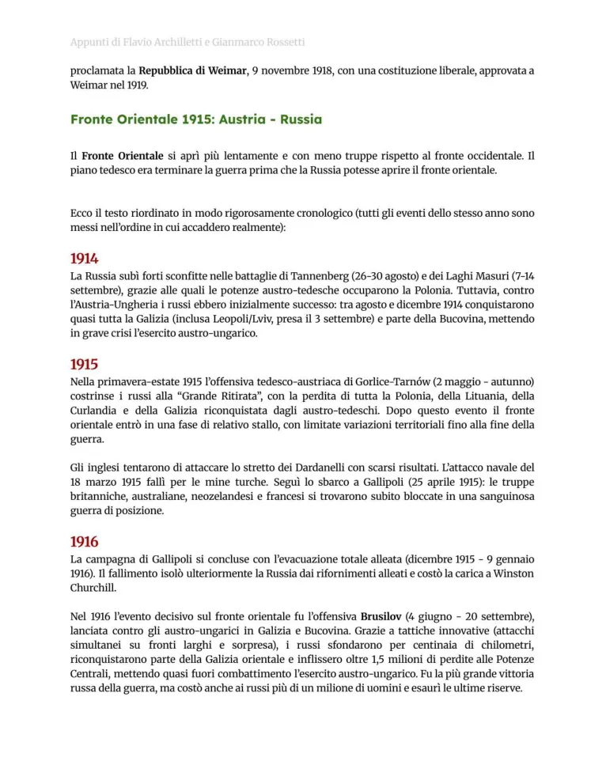
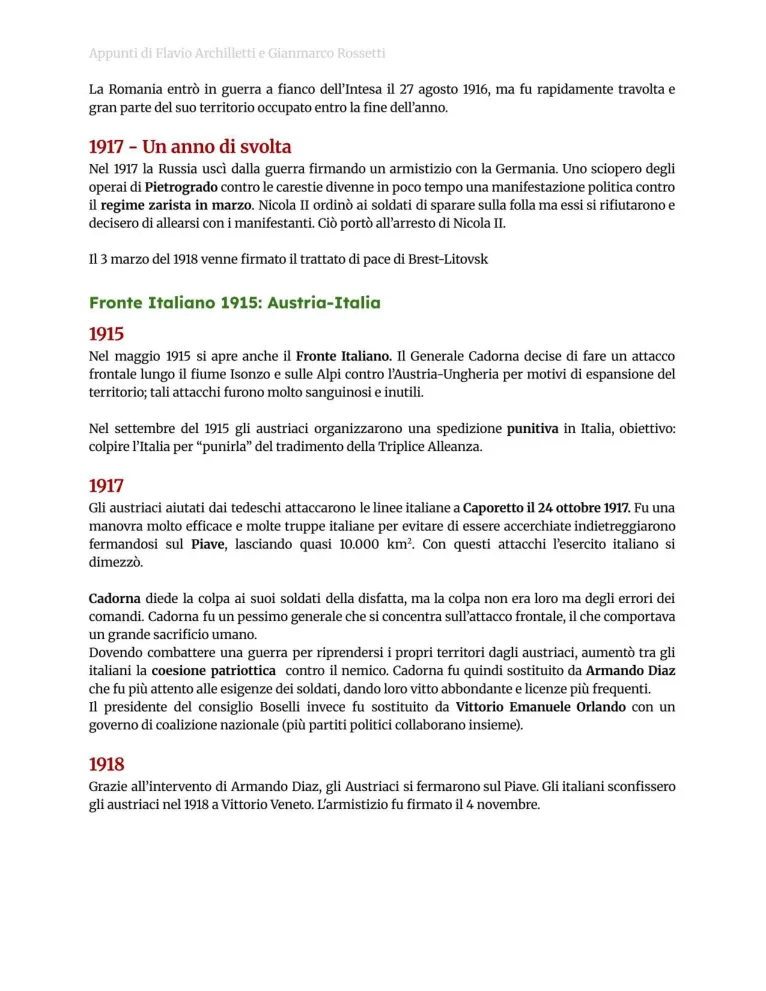
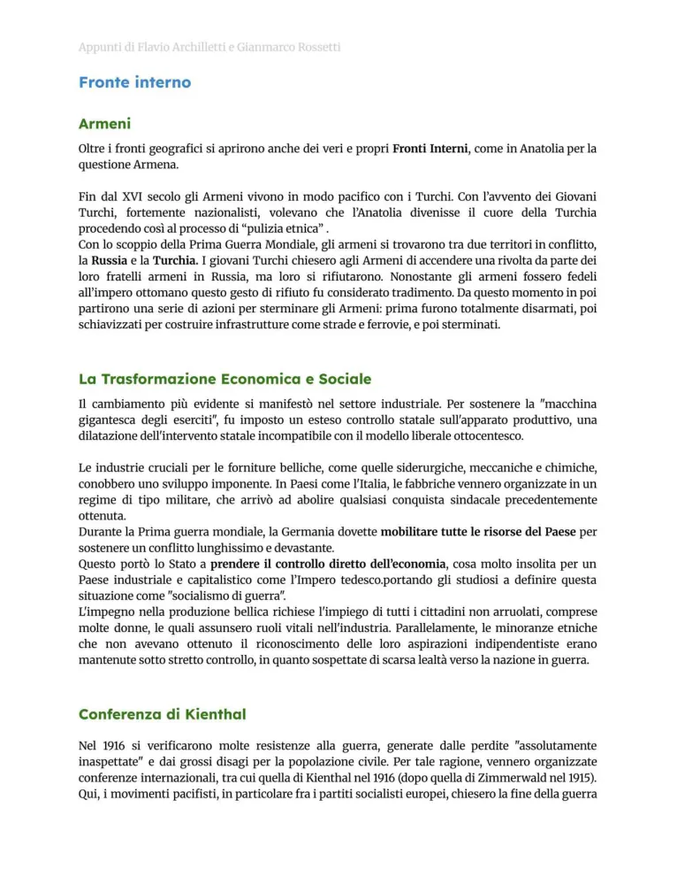
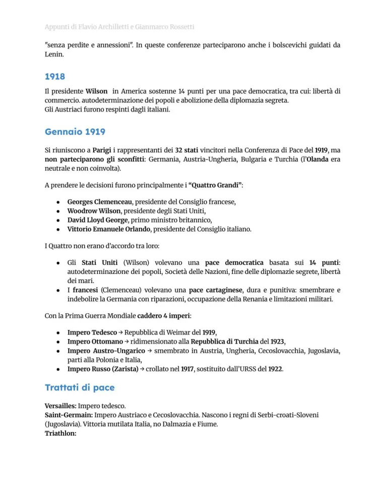
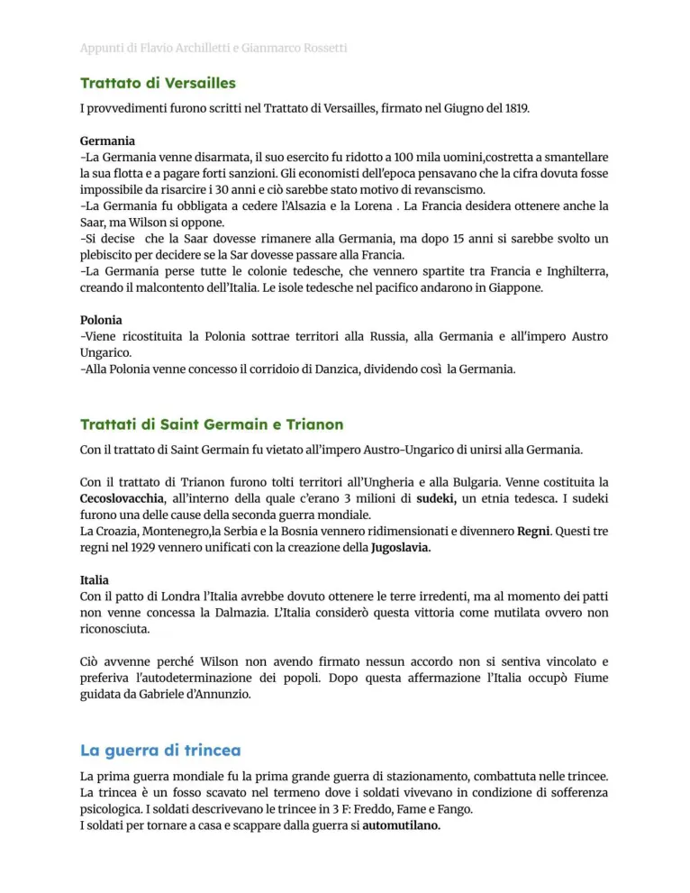
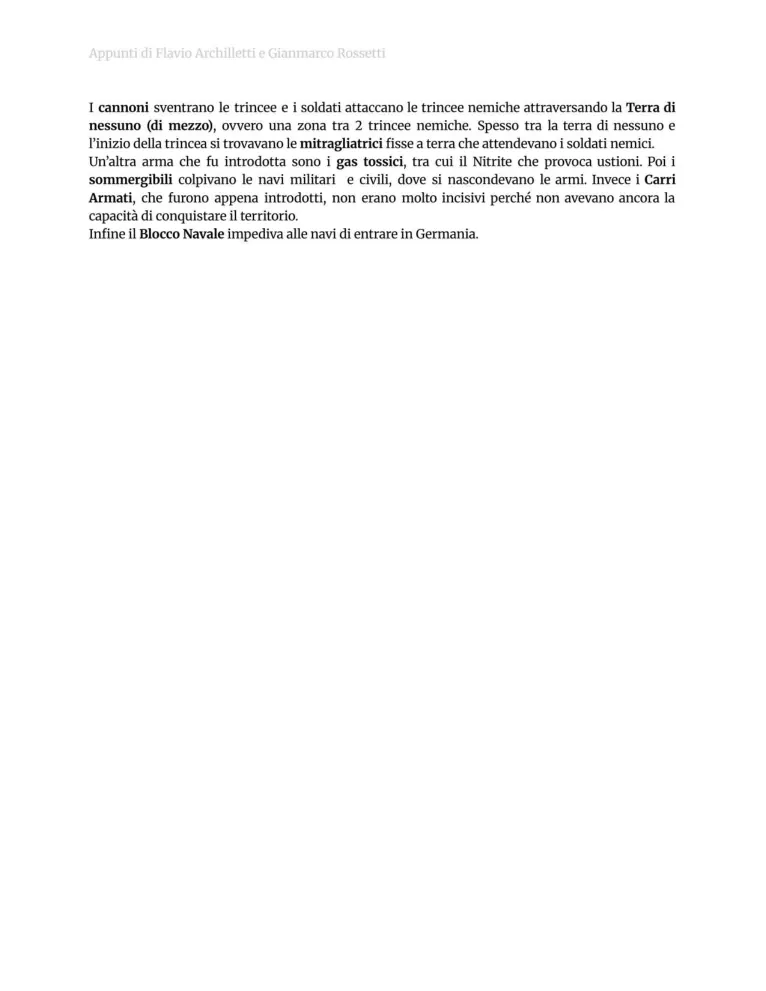

Prima guerra mondiale
Cause, alleanze, fronti, Italia, svolte del 1917, fine del conflitto e trattati di pace.
Studio guidato
Cause profonde
La guerra nasce da nazionalismi, rivalità imperialistiche, corsa agli armamenti, tensioni balcaniche e sistema delle alleanze. L’attentato di Sarajevo del 28 giugno 1914 è la causa occasionale che fa esplodere una crisi già preparata.
Dalla crisi alla guerra
L’Austria-Ungheria dichiara guerra alla Serbia; il sistema delle alleanze porta all’intervento delle altre potenze. La guerra di movimento si trasforma presto in guerra di posizione e trincea.
Italia
Nel 1914 l’Italia resta neutrale. Nel 1915, con il Patto di Londra, entra in guerra con l’Intesa contro Austria-Ungheria e Germania. Il fronte italiano è segnato da Isonzo, Caporetto e Vittorio Veneto.
Svolta del 1917
Il 1917 è decisivo: la Russia esce progressivamente dalla guerra dopo la rivoluzione, gli USA entrano nel conflitto e l’Italia subisce Caporetto. L’equilibrio cambia a favore dell’Intesa.
Pace
Nel 1918 gli Imperi centrali crollano. La conferenza di Parigi produce trattati come Versailles, Saint-Germain e Trianon. Wilson propone i Quattordici punti e nasce la Società delle Nazioni, ma la pace lascia molte tensioni irrisolte.
Parole chiave
Pagine originali dal file
Le immagini sotto mantengono il riferimento diretto alle pagine del PDF usato come base del sito.










Quiz finale
Devi rispondere correttamente a tutte le 12 domande. Se ne sbagli anche solo una, il quiz si azzera e ricomincia da capo.